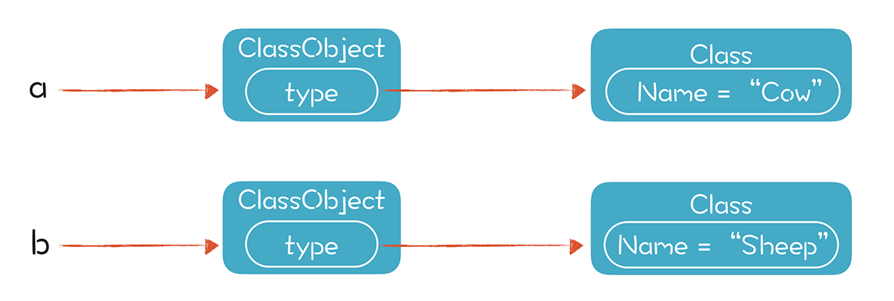

- 00 开篇词 为什么你要学习编译原理？.md.html
- 01 理解代码：编译器的前端技术.md.html
- 02 正则文法和有限自动机：纯手工打造词法分析器.md.html
- 03 语法分析（一）：纯手工打造公式计算器.md.html
- 04 语法分析（二）：解决二元表达式中的难点.md.html
- 05 语法分析（三）：实现一门简单的脚本语言.md.html
- 06 编译器前端工具（一）：用Antlr生成词法、语法分析器.md.html
- 07 编译器前端工具（二）：用Antlr重构脚本语言.md.html
- 08 作用域和生存期：实现块作用域和函数.md.html
- 09 面向对象：实现数据和方法的封装.md.html
- 10 闭包： 理解了原理，它就不反直觉了.md.html
- 11 语义分析（上）：如何建立一个完善的类型系统？.md.html
- 12 语义分析（下）：如何做上下文相关情况的处理？.md.html
- 13 继承和多态：面向对象运行期的动态特性.md.html
- 14 前端技术应用（一）：如何透明地支持数据库分库分表？.md.html
- 15 前端技术应用（二）：如何设计一个报表工具？.md.html
- 16 NFA和DFA：如何自己实现一个正则表达式工具？.md.html
- 17 First和Follow集合：用LL算法推演一个实例.md.html
- 18 移进和规约：用LR算法推演一个实例.md.html
- 19 案例总结与热点问题答疑：对于左递归的语法，为什么我的推导不是左递归的？.md.html
- 20 高效运行：编译器的后端技术.md.html
- 21 运行时机制：突破现象看本质，透过语法看运行时.md.html
- 22 生成汇编代码（一）：汇编语言其实不难学.md.html
- 23 生成汇编代码（二）：把脚本编译成可执行文件.md.html
- 24 中间代码：兼容不同的语言和硬件.md.html
- 25 后端技术的重用：LLVM不仅仅让你高效.md.html
- 26 生成IR：实现静态编译的语言.md.html
- 27 代码优化：为什么你的代码比他的更高效？.md.html
- 28 数据流分析：你写的程序，它更懂.md.html
- 29 目标代码的生成和优化（一）：如何适应各种硬件架构？.md.html
- 30 目标代码的生成和优化（二）：如何适应各种硬件架构？.md.html
- 31 内存计算：对海量数据做计算，到底可以有多快？.md.html
- 32 字节码生成：为什么Spring技术很强大？.md.html
- 33 垃圾收集：能否不停下整个世界？.md.html
- 34 运行时优化：即时编译的原理和作用.md.html
- 35 案例总结与热点问题答疑：后端部分真的比前端部分难吗？.md.html
- 36 当前技术的发展趋势以及其对编译技术的影响.md.html
- 37 云编程：云计算会如何改变编程模式？.md.html
- 38 元编程：一边写程序，一边写语言.md.html
- 加餐 汇编代码编程与栈帧管理.md.html
- 用户故事 因为热爱，所以坚持.md.html
- 第二季回归 这次，我们一起实战解析真实世界的编译器.md.html
- 结束语 用程序语言，推动这个世界的演化.md.html
- 捐赠
13 继承和多态：面向对象运行期的动态特性
面向对象是一个比较大的话题。在“09 | 面向对象：实现数据和方法的封装”中，我们了解了面向对象的封装特性，也探讨了对象成员的作用域和生存期特征等内容。本节课，我们再来了解一下面向对象的另外两个重要特征：继承和多态。
你也许会问，为什么没有在封装特性之后，马上讲继承和多态呢？那是因为继承和多态涉及的语义分析阶段的知识点比较多，特别是它对类型系统提出了新的概念和挑战，所以我们先掌握语义分析，再了解这部分内容，才是最好的选择。
继承和多态对类型系统提出的新概念，就是子类型。我们之前接触的类型往往是并列关系，你是整型，我是字符串型，都是平等的。而现在，一个类型可以是另一个类型的子类型，比如我是一只羊，又属于哺乳动物。这会导致我们在编译期无法准确计算出所有的类型，从而无法对方法和属性的调用做完全正确的消解（或者说绑定）。这部分工作要留到运行期去做，也因此，面向对象编程会具备非常好的优势，因为它会导致多态性。这个特性会让面向对象语言在处理某些类型的问题时，更加优雅。
而我们要想深刻理解面向对象的特征，就必须了解子类型的原理和运行期的机制。所以，接下来，我们从类型体系的角度理解继承和多态，然后看看在编译期需要做哪些语义分析，再考察继承和多态的运行期特征。
从类型体系的角度理解继承和多态
继承的意思是一个类的子类，自动具备了父类的属性和方法，除非被父类声明为私有的。比如一个类是哺乳动物，它有体重（weight）的属性，还会做叫(speak)的操作。如果基于哺乳动物这个父类创建牛和羊两个子类，那么牛和羊就自动继承了哺乳动物的属性，有体重，还会叫。
所以继承的强大之处，就在于重用。也就是有些逻辑，如果在父类中实现，在子类中就不必重复实现。
多态的意思是同一个类的不同子类，在调用同一个方法时会执行不同的动作。这是因为每个子类都可以重载掉父类的某个方法，提供一个不同的实现。哺乳动物会“叫”，而牛和羊重载了这个方法，发出“哞~”和“咩~”的声音。这似乎很普通，但如果创建一个哺乳动物的数组，并在里面存了各种动物对象，遍历这个数组并调用每个对象“叫”的方法时，就会发出“哞~”“咩~”“喵~”等各种声音，这就有点儿意思了。
下面这段示例代码，演示了继承和多态的特性，a的speak()方法和b的speak()方法会分别打印出牛叫和羊叫，调用的是子类的方法，而不是父类的方法：
/**
mammal.play 演示面向对象编程：继承和多态。
*/
class Mammal{
int weight = 20;
boolean canSpeak(){
return true;
}
void speak(){
println("mammal speaking...");
}
}
class Cow extends Mammal{
void speak(){
println("moo~~ moo~~");
}
}
class Sheep extends Mammal{
void speak(){
println("mee~~ mee~~");
println("My weight is: " + weight); //weight的作用域覆盖子类
}
}
//将子类的实例赋给父类的变量
Mammal a = Cow();
Mammal b = Sheep();
//canSpeak()方法是继承的
println("a.canSpeak() : " + a.canSpeak());
println("b.canSpeak() : " + b.canSpeak());
//下面两个的叫声会不同，在运行期动态绑定方法
a.speak(); //打印牛叫
b.speak(); //打印羊叫
所以，多态的强大之处，在于虽然每个子类不同，但我们仍然可以按照统一的方式使用它们，做到求同存异。以前端工程师天天打交道的前端框架为例，这是最能体现面向对象编程优势的领域之一。
前端界面往往会用到各种各样的小组件，比如静态文本、可编辑文本、按钮等等。如果我们想刷新组件的显示，没必要针对每种组件调用一个方法，把所有组件的类型枚举一遍，可以直接调用父类中统一定义的方法redraw()，非常简洁。即便将来添加新的前端组件，代码也不需要修改，程序也会更容易维护。
总结一下：面向对象编程时，我们可以给某个类创建不同的子类，实现一些个性化的功能；写程序时，我们可以站在抽象度更高的层次上，不去管具体的差异。
如果把上面的结论抽象成一般意义上的类型理论，就是子类型（subtype）。
子类型（或者动名词：子类型化），是对我们前面讲的类型体系的一个补充。
子类型的核心是提供了is-a的操作。也就是对某个类型所做的所有操作都可以用子类型替代。因为子类型 is a 父类型，也就是能够兼容父类型，比如一只牛是哺乳动物。
这意味着只要对哺乳动物可以做的操作，都可以对牛来做，这就是子类型的好处。它可以放宽对类型的检查，从而导致多态。你可以粗略地把面向对象的继承看做是子类型化的一个体现，它的结果就是能用子类代替父类，从而导致多态。
子类型有两种实现方式：一种就是像Java和C++语言，需要显式声明继承了什么类，或者实现了什么接口。这种叫做名义子类型（Nominal Subtyping）。
另一种是结构化子类型（Structural Subtyping），又叫鸭子类型（Duck Type）。也就是一个类不需要显式地说自己是什么类型，只要它实现了某个类型的所有方法，那就属于这个类型。鸭子类型是个直观的比喻，如果我们定义鸭子的特征是能够呱呱叫，那么只要能呱呱叫的，就都是鸭子。
了解了继承和多态之后，我们看看在编译期如何对继承和多态的特性做语义分析。
如何对继承和多态的特性做语义分析
针对哺乳动物的例子，我们用前面语义分析的知识，看看如何在编译期针对继承和多态做语义分析，也算对语义分析的知识点进行应用和复盘。
首先，从类型处理的角度出发，我们要识别出新的类型：Mammal、Cow和Sheep。之后，就可以用它们声明变量了。
第二，我们要设置正确的作用域。
从作用域的角度来看，一个类的属性（或者说成员变量），是可以规定能否被子类访问的。以Java为例，除了声明为private的属性以外，其他属性在子类中都是可见的。所以父类的属性的作用域，可以说是以树状的形式覆盖到了各级子类：

第三，要对变量和函数做类型的引用消解。
也就是要分析出a和b这两个变量的类型。那么a和b的类型是什么呢？是父类Mammal？还是Cow或Sheep？
注意，代码里是用Mammal来声明这两个变量的。按照类型推导的算法，a和b都是Mammal，这是个I属性计算的过程。也就是说，在编译期，我们无法知道变量被赋值的对象确切是哪个子类型，只知道声明变量时，它们是哺乳动物类型，至于是牛还是羊，就不清楚了。
你可能会说：“不对呀，我在编译的时候能知道a和b的准确类型啊，因为我看到了a是一个Cow对象，而b是一个Sheep，代码里有这两个对象的创建过程，我可以推导出a和b的实际类型呀。”
没错，语言的确有自动类型推导的特性，但你忽略了限制条件。比如，强类型机制要求变量的类型一旦确定，在运行过程就不能再改，所以要让a和b能够重新指向其他的对象，并保持类型不变。从这个角度出发，a和b的类型只能是父类Mammal。
所以说，编译期无法知道变量的真实类型，可能只知道它的父类型，也就是知道它是一个哺乳动物，但不知道它具体是牛还是羊。这会导致我们没法正确地给speak()方法做引用消解。正确的消解，是要指向Cow和Sheep的speak方法，而我们只能到运行期再解决这个问题。
所以接下来，我们就讨论一下如何在运行期实现方法的动态绑定。
如何在运行期实现方法的动态绑定
在运行期，我们能知道a和b这两个变量具体指向的是哪个对象，对象里是保存了真实类型信息的。具体来说，在playscript中，ClassObject的type属性会指向一个正确的Class，这个类型信息是在创建对象的时候被正确赋值的：

在调用类的属性和方法时，我们可以根据运行时获得的，确定的类型信息进行动态绑定。下面这段代码是从本级开始，逐级查找某个方法的实现，如果本级和父类都有这个方法，那么本级的就会覆盖掉父类的，这样就实现了多态：
protected Function getFunction(String name, List<Type> paramTypes){
//在本级查找这个这个方法
Function rtn = super.getFunction(name, paramTypes); //TODO 是否要检查visibility
//如果在本级找不到，那么递归的从父类中查找
if (rtn == null && parentClass != null){
rtn = parentClass.getFunction(name,paramTypes);
}
return rtn;
}
如果当前类里面没有实现这个方法，它可以直接复用某一级的父类中的实现，这实际上就是继承机制在运行期的原理。
你看，只有了解运行期都发生了什么，才能知道继承和多态是怎么发生的吧。
这里延伸一下。我们刚刚谈到，在运行时可以获取类型信息，这种机制就叫做运行时类型信息（Run Time Type Information, RTTI）。C++、Java等都有这种机制，比如Java的instanceof操作，就能检测某个对象是不是某个类或者其子类的实例。
汇编语言是无类型的，所以一般高级语言在编译成目标语言之后，这些高层的语义就会丢失。如果要在运行期获取类型信息，需要专门实现RTTI的功能，这就要花费额外的存储开销和计算开销。就像在playscript中，我们要在ClassObject中专门拿出一个字段来存type信息。
现在，我们已经了解如何在运行期获得类型信息，实现方法的动态绑定。接下来，我带你了解一下运行期的对象的逐级初始化机制。
继承情况下对象的实例化
在存在继承关系的情况下，创建对象时，不仅要初始化自己这一级的属性变量，还要把各级父类的属性变量也都初始化。比如，在实例化Cow的时候，还要对Mammal的成员变量weight做初始化。
所以我们要修改playscript中对象实例化的代码，从最顶层的祖先起，对所有的祖先层层初始化：
//从父类到子类层层执行缺省的初始化方法，即不带参数的初始化方法
protected ClassObject createAndInitClassObject(Class theClass) {
ClassObject obj = new ClassObject();
obj.type = theClass;
Stack<Class> ancestorChain = new Stack<Class>();
// 从上到下执行缺省的初始化方法
ancestorChain.push(theClass);
while (theClass.getParentClass() != null) {
ancestorChain.push(theClass.getParentClass());
theClass = theClass.getParentClass();
}
// 执行缺省的初始化方法
StackFrame frame = new StackFrame(obj);
pushStack(frame);
while (ancestorChain.size() > 0) {
Class c = ancestorChain.pop();
defaultObjectInit(c, obj);
}
popStack();
return obj;
}
在逐级初始化的过程中，我们要先执行缺省的成员变量初始化，也就是变量声明时所带的初始化部分，然后调用这一级的构造方法。如果不显式指定哪个构造方法，就会执行不带参数的构造方法。不过有的时候，子类会选择性地调用父类某一个构造方法，就像Java可以在构造方法里通过super()来显式地调用父类某个具体构造方法。
如何实现this和super
现在，我们已经了解了继承和多态在编译期和运行期的特性。接下来，我们通过一个示例程序，把本节课的所有知识复盘检验一下，加深对它们的理解，也加深对this和super机制的理解。
这个示例程序是用Java写的，在Java语言中，为面向对象编程专门提供了两个关键字：this和super，这两个关键字特别容易引起混乱。
比如在下面的ThisSuperTest.Java代码中，Mammal和它的子类Cow都有speak()方法。如果我们要创建一个Cow对象，会调用Mammal的构造方法Mammal(int weight)，而在这个构造方法里调用的this.speak()方法，是Mammal的，还是Cow的呢？
package play;
public class ThisSuperTest {
public static void main(String args[]){
//创建Cow对象的时候，会在Mammal的构造方法里调用this.reportWeight()，这里会显示什么
Cow cow = new Cow();
System.out.println();
//这里调用，会显示什么
cow.speak();
}
}
class Mammal{
int weight;
Mammal(){
System.out.println("Mammal() called");
this.weight = 100;
}
Mammal(int weight){
this(); //调用自己的另一个构造函数
System.out.println("Mammal(int weight) called");
this.weight = weight;
//这里访问属性，是自己的weight
System.out.println("this.weight in Mammal : " + this.weight);
//这里的speak()调用的是谁，会显示什么数值
this.speak();
}
void speak(){
System.out.println("Mammal's weight is : " + this.weight);
}
}
class Cow extends Mammal{
int weight = 300;
Cow(){
super(200); //调用父类的构造函数
}
void speak(){
System.out.println("Cow's weight is : " + this.weight);
System.out.println("super.weight is : " + super.weight);
}
}
运行结果如下：
Mammal() called
Mammal(int weight) called
this.weight in Mammal : 200
Cow's weight is : 0
super.weight is : 200
Cow's weight is : 300
super.weight is : 200
答案是Cow的speak()方法，而不是Mammal的。怎么回事？代码里不是调用的this.speak()吗？怎么这个this不是Mammal，却变成了它的子类Cow呢？
其实，在这段代码中，this用在了三个地方：
- this.weight 是访问自己的成员变量，因为成员变量的作用域是这个类本身，以及子类。
- this()是调用自己的另一个构造方法，因为这是构造方法，肯定是做自身的初始化。换句话说，构造方法不存在多态问题。
- this.speak()是调用一个普通的方法。这时，多态仍会起作用。运行时会根据对象的实际类型，来绑定到Cow的speak()方法上。
只不过，在Mammal的构造方法中调用this.speak()时，虽然访问的是Cow的speak()方法，打印的是Cow中定义的weight成员变量，但它的值却是0，而不是成员变量声明时“int weight = 300;”的300。为什么呢？
要想知道这个答案，我们需要理解多层继承情况下对象的初始化过程。在Mammal的构造方法中调用speak()的时候，Cow的初始化过程还没有开始呢，所以“int weight = 300;”还没有执行，Cow的weight属性还是缺省值0。
怎么样？一个小小的例子，却需要用到三个方面的知识：面向对象的成员变量的作用域、多态、对象初始化。Java程序员可以拿这个例子跟同事讨论一下，看看是不是很好玩。
讨论完this，super就比较简单了，它的语义要比this简单，不会出现歧义。super的调用，也是分成三种情况：
- super.weight。这是调用父类或更高的祖先的weight属性，而不是Cow这一级的weight属性。不一定非是直接父类，也可以是祖父类中的。根据变量作用域的覆盖关系，只要是比Cow这一级高的就行。
- super(200)。这是调用父类的构造方法，必须是直接父类的。
- super.speak()。跟访问属性的逻辑一样，是调用父类或更高的祖先的speak()方法。
课程小结
这节课我带你实现了面向对象中的另两个重要特性：继承和多态。在这节课中，我建议你掌握的重点内容是：
- 从类型的角度，面向对象的继承和多态是一种叫做子类型的现象，子类型能够放宽对类型的检查，从而支持多态。
- 在编译期，无法准确地完成对象方法和属性的消解，因为无法确切知道对象的子类型。
- 在运行期，我们能够获得对象的确切的子类型信息，从而绑定正确的方法和属性，实现继承和多态。另一个需要注意的运行期的特征，是对象的逐级初始化过程。
面向对象涉及了这么多精彩的知识点，拿它作为前端技术原理篇的最后一讲，是正确的选择。到目前为止，我们已经讲完了前端技术的原理篇，也如约拥有了一门具备丰富特性的脚本语言，甚至还支持面向对象编程、闭包、函数式编程这些很高级的特性。一般的应用项目所需要的语言特性，很难超过这个范围了。接下来的两节，我们就通过两个具体的应用案例，来检验一下学到的编译原理前端技术，看看它的威力！
一课一思
本节课我们深入讨论了面向对象的继承和多态特征。那么你所熟悉的框架，有没有充分利用继承和多态的特点实现一些很有威力的功能？或者，你有没有利用多态的特点，写过一些比较有用的类库或框架呢？欢迎在留言区分享你的经验。
最后，感谢你的阅读，如果这篇文章让你有所收获，也欢迎你将它分享给更多的朋友。
本节课的示例代码我放在了文末，供你参考。
© 2019 - 2023 Liangliang Lee. Powered by gin and hexo-theme-book.